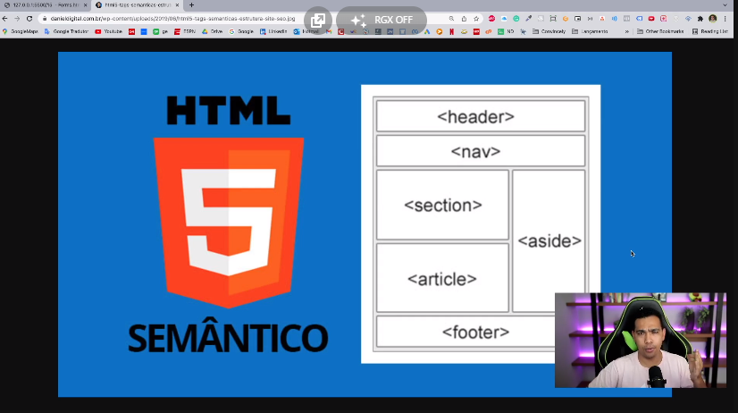

<!--
    Semântica (Voltada a Estrutura)

    Para o SEO (Mecanismos de busca como Google) terem uma melhor leitura e por consequência, ranquear melhor o site,
    é importante que a estrutura seja semântica

    Semelhante a função da tag div, as tags abaixo também dizem ao SEO, qual parte do site está sendo mostrada
-->


<header> </header> <!-- Parte superior do site (Cabeçalho), onde normalmente se encontra a logo, banner, etc. -->

<nav> </nav>  <!-- Menu de navegação -->

<section> </section> <!-- Seção, usado para dividir o conteúdo em seções lógicas-->

<article> </article> <!-- Artigos, para indicar um conteúdo autonomo (noticias, artigos de blogs, etc.) -->

<aside> </aside> <!-- Menu lateral, geralmente para um conteúdo adicional -->

<footer> </footer> <!-- Parte inferior do site (Rodapé), onde normalmente se encontra informações de contato, endereços, etc.-->



